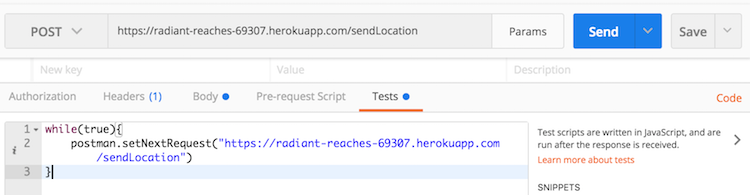
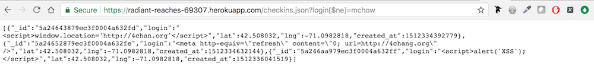
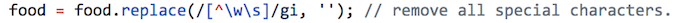
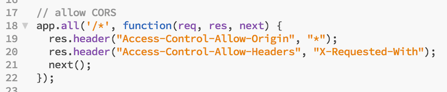

This product displays nearest user check ins and nearest historical landmarks in a one mile vicinity from the user accessing the application. I was hired to find three security flaws within the application and document these findings as demonstrated below.
In regard to finding these flaws I used my notes from COMP20, discussions with TA Michael Morisi and instructor Ming Chow, the OWASP TOP 10 list, as well as posts from Piazza. When I actually executed these attacks I used Postman as well as basic query strings added to the application URL.
The first of the three issues found within the application is that it is vulnerable to a hacker performing constant, repetetive changes to the database, which would crash the application and prevent users from accessing it. Second, is that it is possible that hackers could inject malicious code into the application and obtain confidential information. And third, is that all other websites have the potential to access certain data that the application makes public when it passes information from page to page via the browswer.
Issue: Denial of Service Attack
Description: A denial of service attack takes place when a user brings down the application via rapid and constant calls to the servers.
Location: This is an issue with the API. It is viable that someone could run an infinite loop that keeps hitting the database with get and post requests and bring down the app so that users cannot access it.
Severity: This is a high severity issue, as it is not difficult to execute and it would ultimately bring down the entire application.
Proof of Vulnerability and Picture:
Above is an image of how to execute an infinite loop in Postman
Resolution: One option for combatting a DOS attack is through rate limiting- meaning a limit is placed on the amount of requests that can be made per user to an API per cycle (can be a designated time i.e. 15 minutes). While this does not prevent an attack completely it is a good step towards making the application less suscetible to a DOS attack. Further, an API key can be implemented as well, which helps identify the calling program, developer, or user of the site. This also helps prevent DOS attacks as it allows the owner of the API to identify and ban malicious users.
Issue: Cross-site Scripting
Description: Cross-site scripting occurs when malicious scripts are injected into web applications. In this case, the source code does not strip the contents of a get request of special characters such that it is possible to perform unintended queries on the database and access information that should not be accessible.
Location: This issue was found in the URL bar- specifically when performing the checkins.json get request.
Severity: This is a high severity issue as it is one where confidential information could easily become public when it should remain hidden.
Proof of Vulnerability and Picture:
Resolution: Strip the parameters within the get request of special characters so that the malicious query cannot be performed. Eg:
Issue: Access-Control-Allow-Origin: *
Description: By setting Access-Control-Allow to * it allows any site to send a XHR (XMLHTTPRequest) request to the site and thereby access the server's response, which could hold confidential information.
Location: This issue was found in the source code within the index.js file.
Severity: This is a high severity issue because it allows any site to send a XHR request to the site and access the server's response, which could include confidential information like authentication information (particularly if it is used by the browser between sessions i.e. cookie-based sessions).
Proof of Vulnerability and Picture:
Resolution:Specify the sites that have permission to send XHR requests to the site and access the server's response. Eg: Access-Control-Allow-Origin: http://foo.example